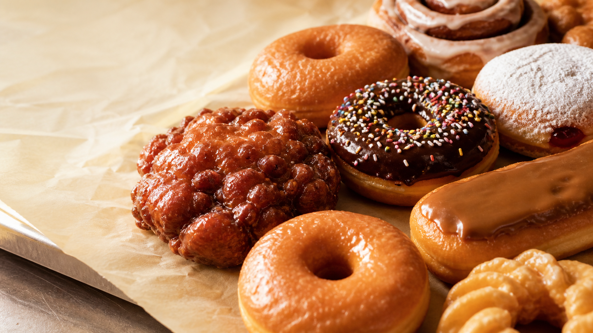

01The classic
Raised Glazed
Cloud-soft, golden, and dipped in a crackly vanilla glaze.

Handmade from scratch. Fried in small batches. Best enjoyed before you even make it home.
The classics you know, the cravings you can't shake. Every batch is made in-house, every day.
Bob's started as a small neighborhood donut shop on Polk Street. More than seven decades later, we're still family-owned, still independent, and still making every donut from scratch.
That means early mornings, well-loved recipes, and a fryer that rarely rests. It's not the fastest way to make a donut—but you can taste why it's the right one.
It's roughly the size of your head and famous across San Francisco. Take on the challenge or share it with the table—we won't judge.
Visit the hall of fame ↗Three neighborhood shops. Same scratch-made goodness. Pick the one closest to your craving.
1720 Polk Street
San Francisco, CA
601 Baker Street
San Francisco, CA
252 Almonte Boulevard
Mill Valley, CA